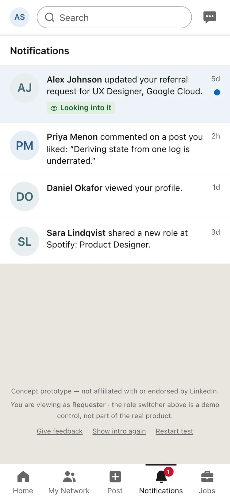
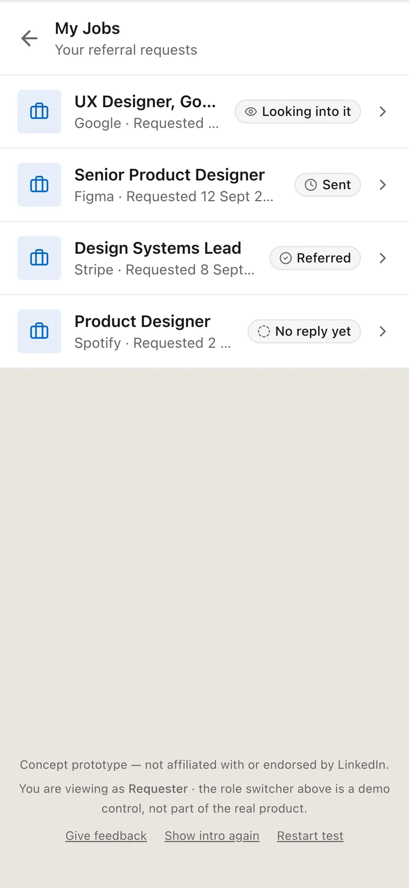

Case study 04 · Concept feature · Built and tested
You asked for a referral. Now you can see where it stands.
In 30 seconds
- The problem: You ask someone at a company to refer you, then hear nothing. You can't tell a busy person from a quiet no, so you send the awkward follow-up, and now both of you feel bad.
- What I did: Designed a shared referral request with six plain statuses that both people can see. Only the referrer can say yes or no, and the requester can follow along without chasing. I built it as a working prototype inside LinkedIn's real interface.
- The result: Four people ran the full two-sided journey on their own phones. All four finished without help and said they would use it.
What Albin sees when he opens it. He last saw it at Sent, and Alex referred him in the meantime. Sent becomes Referred, and the two updates he missed fill into the history in the order they happened.
Product overview and context
Referral Status is a concept feature for LinkedIn. It turns a referral ask, which today is a plain direct message, into a shared request with a status that both people can see.
On LinkedIn the ask already happens in Messaging. Someone applies for a role, finds a connection at the company and writes to them. The person asked is often a second-degree connection they met once at an event. From then on, the only signal the job seeker gets is whether a reply arrives.
Two people use the feature, and they want different things. The requester is looking for work and needs an answer. The referrer works at the company, wants to help when they can, and has a full day of their own work. LinkedIn has a stake too, because it wants the job search to keep happening on LinkedIn.
The problem space
What each side is trying to get done
I wrote the needs as jobs to be done, one for each side. The line about how it feels under each job ended up shaping more of the design than the functional part did.
The requesterAlbin, looking for work
WhenI've applied for a role and asked someone there to refer me
I want toknow whether they've seen it and what is happening
So I candecide whether to wait, move on or ask someone else
How it feels: worried about looking pushy, and about waiting weeks on something that is already a no.
The referrerAlex, works at the company
Whensomeone I barely know asks me to refer them
I want togive an honest answer without writing a careful message
So I canhelp when I can, and say no when I can't, without feeling bad about it
How it feels: guilty about the message sitting unanswered, and unsure how to say no kindly.
LinkedInThe platform in between
Whenmembers use LinkedIn to look for work
We want tosee referral asks end in a clear answer
So we cankeep the job search, and the people in it, on LinkedIn
What's at stake: every thread that goes quiet is a small reason to take the next ask somewhere else.
Where it breaks today
A message can only be answered or unanswered. A referrer who is checking with the hiring team looks the same as one who never opened it, so the requester fills the silence themselves. They reread what they wrote, wait a few days and send something that starts with "just following up". The referrer, who meant to reply, now has two messages to feel guilty about.
Saying no is hard in the same channel. There is no small way to say "I can't this time". It takes a written message, and writing a kind no to a near stranger is exactly the kind of task people put off.
What the business needs
LinkedIn's job products depend on job seekers keeping their search on LinkedIn, and on employers getting good candidates from it. Referrals touch both. A referral that ends in a clear answer is a good experience for the job seeker, and a referred candidate who arrives with a resume is a better lead for the employer. A thread that goes quiet helps neither of them.
So I held the design to one business goal: more referral asks should reach an answer, and none of them should cost the referrer any goodwill.
Strategy and vision
Every referral ask ends in a clear answer, and nobody has to chase to get it.
I turned that into four rules and checked every screen against them.
- Nothing puts pressure on the referrer. No nudge button, no read receipts, no countdown aimed at them. Moving the requester's worry onto the referrer would make the silence worse.
- It lives where the ask already happens. The request sits in the chat and in the job tracker. It gets no tab of its own.
- The system can observe, but only people make promises. The app may say a request has gone quiet. Only the referrer can say yes or no.
- Saying no costs almost nothing. It takes one tap and no explanation, and the requester gets a kind message where there used to be silence.
What I left out on purpose
Reminders sent to the referrer were the first thing I cut, for the reason in rule one. I also left out anything that happens after a referral is made. Once Alex says Referred, the employer's hiring process takes over, and LinkedIn can't see inside it honestly enough to report on it. And there are no counts or scores showing how often someone refers people, because a public score would turn a favour into a performance.
Information architecture
The feature adds no new top-level place to LinkedIn. Every piece hangs off a place people already use, so nobody has to learn where to find it.
Everything points at the Referral Status screen. The card in the chat, the notification and the row in My Jobs all open it, so the answer lives in exactly one place.
The model underneath
Under the screens there are two things: a request, and a list of updates to it. The status you see is always the latest update, worked out each time the screen loads. There is no separate status field that could drift out of step with the history.
| Status | Who sets it | Final? | Stored as |
|---|---|---|---|
| Sent | The system, when the request is saved | No | Pending |
| Looking into it | The referrer | No, it can change again | Considering |
| No reply yet | The system only, after a quiet period | No, any answer replaces it | No Update Received |
| Referred | The referrer | Yes | Referred |
| Can't refer | The referrer | Yes | Unable to Refer |
| Withdrawn | The requester | Yes, for now | Withdrawn |
The one I spent longest on is No reply yet. It is the only status the system infers, and the easiest to read as blame, so its wording is flat and it can always be replaced. If Alex answers a week after the request went quiet, Alex's answer replaces the system's guess.
Core user flows
The feature has three moments: asking, answering and finding out. The swimlane shows who does what, and in what order.
Two paths sit off the main line. The requester can withdraw at any point before a final answer. And if nothing happens for a while, the system marks the request No reply yet. That second path is designed but not built yet, because I haven't decided how long "a while" should be.
Asking
People want a referral at two moments: while they're talking to someone, and while they're looking at a job. So there are two ways in, and both lead to the same compose screen. Halfway through testing I stopped pointing people at one of them and recorded which one each person chose instead.
From a job. You are already looking at the role, and the tracker shows who you know there.
- The stage, as a tag in LinkedIn’s Job tracker style.
- Who you already know at the company.
- The ask starts from the job itself.

The ask, drafted for you. It ends with "No pressure at all if not", because the easiest request to answer is one you are allowed to turn down.
- Drafted for you, and it ends with "No pressure at all if not".
- Required, so the referrer can vouch with confidence.
- A review step, because a sent request can’t be taken back.
Sending takes about two seconds, because nothing appears until the request is saved. The envelope fills that wait. The request goes in as a letter and is sealed with Alex's initials while the save runs, and it only lifts off once the save succeeds. If the save fails, the envelope opens back up. Then the request lands in the chat as a card, where Albin can keep following it.
The send is the loading state. Letter in, flap closed, sealed, then it lands in the thread.

It lives in the chat. The request is a card in the thread, next to the conversation that led to it.
- A card in the chat, next to the conversation that led to it.
- The live status, in the same tag used everywhere.
- Opens the one screen where the answer lives.

Sent. People are busy, he will hear when anything changes, and there is no need to follow up.
- What the status means, in plain words, for whoever is reading.
- The requester can close it any time before a final answer.
- The history is the record. The status is always its latest entry.
Answering
Alex gets three options, and each one says plainly whether it is final. The two final answers ask for a confirmation because they can't be changed afterwards. Looking into it skips the confirmation, since Alex can change it later.
Every answer is thanked, a no included, because an answer of any kind is what the feature is for. Each gets a short moment in which the answer travels to Albin. An eye crosses for Looking into it. A note crosses slowly and calmly for Can't refer, with nothing celebratory about it. Referred is different, because a referral is vouching: Alex's name is stamped onto Albin's application, and LinkedIn's success badge confirms it.

Alex's side. Saying no is one tap and needs no explanation. An optional note is there for anyone who wants to add one.
- Every option says plainly whether it is final.
- An optional note. A no needs no explanation.
- Stays off until an answer is picked.
Referred is a vouch. Alex's name presses onto the application, then LinkedIn's sage success badge draws its check.
Finding out
The update comes to Albin as a notification. If he had to go and check, checking would just be a quieter way of chasing.

It comes to you. The update lands where LinkedIn updates already land.

Referred. The history keeps the whole story, and the explanation suggests saying thank you.
- LinkedIn’s sage success badge, used only for Referred.
- It suggests saying thank you.
- Notes from the referrer stay in the history.

Every ask in one place. Most people ask several contacts at once. Four requests here, none needing a follow-up.
- Green while a request is live or has good news.
- Grey once it is quiet or closed. Never red.
Feature breakdown
At a high level the feature is eight parts. The last one is a behaviour that runs across the others.
Request composer
Drafts a warm, specific ask that is easy to decline. It needs a job and a resume, shows a review step because a sent request can't be taken back, then sends it in an envelope.
Request card
Sits in the chat thread and shows the live status, with a link to the full record.
Referral Status screen
The current status in plain words, what it means for whoever is reading, and the full history with notes.
Referrer response
Three options and an optional note. Only the two final answers ask for a confirmation, and every answer gets a short moment of thanks.
Notifications
One for each update from the referrer. Opening the status marks them read, however you got there.
My Jobs
Every request with its current status, for people who ask several contacts at once.
Withdraw
The requester can close a request at any time before a final answer. The referrer is told there is nothing left to do.
Change on arrival
The status screen remembers the last update each person saw. If the status has moved since, the old one leaves, the new one arrives, and whatever they missed fills into the history. Refreshing the page never replays it.
Design system foundation
I built on LinkedIn's own design system. The feature had to look like it shipped with the app, or testers would have been reacting to a different product.
Colour follows LinkedIn's own rules, which I checked against its Job tracker on Mobbin: blue means you can act on it, green means progress or good news, and grey is neutral. The sage badge is the one LinkedIn shows on "You're all set" and "Post successful". I matched every colour by eye from those screens and drew each piece in code, so no LinkedIn artwork is used. Secondary text stays at #666, which is 5.7:1 on white and 4.6:1 on the grey iOS canvas, so it passes WCAG AA on both.
The tags copy the Job tracker, where "Applied" is green and "Saved" is grey. A request is green while it is live or has good news, and grey once it is quiet or closed. LinkedIn never uses red for a person's no, even in its own rejection messages, so Can't refer is grey. The icon and the word carry the meaning, and the colour only backs them up.
PendingSent
ConsideringLooking into it
No Update ReceivedNo reply yet
Unable to ReferCan't refer
The data keeps the names from the spec, and people only ever see the plain ones. I made this rule strict after noticing my own onboarding said Pending while the badge right next to it said Sent.
env-flap-closeenv-leavecard-landmoment-travelvouch-stampstatus-inentry-expandMotion appears only where something changes hands: a request leaving, an answer arriving, a status that moved while you were away. When you open a changed request, the old status holds for 650ms so you can read what it was. When you cause the change yourself, it holds for 120ms so the tap feels answered. With reduced motion switched on, every one of these shows its end state straight away.
Key decisions and trade-offs
1. No nudge button
The obvious feature here is a button that reminds the referrer. I didn't build it. It deals with the requester's worry by handing it to the referrer, and a referrer who feels chased is more likely to ignore the next ask as well.
The trade-off: the requester has less control, because they can't prompt Alex. What they can do is withdraw and ask someone else, and No reply yet tells them when that is a reasonable thing to do.
2. The status is worked out from the history, never stored
Keeping a current status next to the history gives you two versions of the truth. The day they disagree, the screen confidently shows something that never happened. So the status is always read from the latest entry in the history.
The trade-off: every screen reads the whole history to show one word. With lists this short the cost is tiny, and it removes a whole class of bugs.
3. Nothing appears until it is saved
Showing the request straight away and taking it back if saving fails is fine for a like button. Here it would mean showing Sent for a request that never left, which is the exact uncertainty the feature exists to remove.
The trade-off: there is a wait of about two seconds after tapping Send. The envelope fills it, and because it only lifts off once the save has succeeded, it never says Sent too early.
4. LinkedIn's colour rules, and no red
My first version kept every status grey. That rule was mine, written into my own spec. When I checked LinkedIn's Job tracker, it turned out LinkedIn does use colour: green for progress, grey for neutral, and no red for a person's no. So I switched to LinkedIn's rules. Can't refer stays grey, because a red tag would be the opposite of what the referrer needs to feel when they choose it.
The trade-off: Sent is green, like LinkedIn's "Applied", so good news and "still waiting" share a colour. The word and the icon tell them apart, and Referred gets the success badge on top.
5. A resume is required
Alex is putting their name behind Albin. A resume lets them do that with some confidence, and saves them asking for one, which would be another message in the thread.
The trade-off: it adds a step, and some people will stop there. I would measure that drop-off before keeping the rule.
6. Only real news moves
The change only plays when something is new since you last looked, and only Referred gets a moment of its own. Can't refer gets the plain change, because celebrating a no would say the wrong thing.
The trade-off: Can't refer feels flatter than Referred. I did that on purpose, but tone is easy to get wrong there, so it is one of the first things I would test with real referrers.
7. Referred is a vouch
My first Referred moment brought the two avatars together into a hug, with a heart. In the prototype it looked romantic, which is wrong for two people who have met once. A hug is about a relationship, and a referral is something else: Alex putting their name behind Albin. So Alex's name is now stamped onto Albin's application, and LinkedIn's success badge confirms it.
The trade-off: the vouch is quieter and less warm than the hug. That suits LinkedIn, where even the celebration illustrations show high-fives.
Outcomes and impact
This is a concept, so there is no production data. What I have is a small usability test. After that comes how I expect the feature to move LinkedIn's numbers, and how I would check.
How I tested it
The feature has two sides, so a tester has to ask as one person, answer as the other, then come back and see the result. That is a lot to explain, and an unmoderated tester who gets lost just closes the tab. So the test setup became a design problem of its own: a short intro, a guide bar that always names the next step, a spotlight on the control you need, and a short survey at the end.

A four-screen intro. The later screens animate the statuses and the role switch, so testers see both sides before they play them.

The guide bar and spotlight. Step 2 of 6, with the next control lit up. This is how one tester plays two people without getting lost.
- The guide bar always names the next step.
- A spotlight on the control the tester needs.
- Labelled as a demo control, so nobody mistakes it for LinkedIn.
Four people ran it end to end on their own phones. All four finished without help, and all four said they would use it. That tells me the idea is understood and the flow holds together. It can't tell me how a real referrer behaves, a busy stranger with a full inbox, because in my test one person played both sides.
Where it would move the business
Get new users
The hardest ask is the first one. A drafted message that says "no pressure", and a promise that you won't have to chase, lower the bar for people who have never asked for a referral.
Share of active job seekers who send their first referral request.
Retain existing users
An open request is a reason to come back. There is a status to check and a notification to open, and the job search stays on LinkedIn while it runs.
30-day return rate for people with an open request, against people who asked in a plain message.
Generate revenue
LinkedIn earns from employers as well as job seekers. A referred candidate who arrives with a resume and a clear yes is a better lead, which strengthens LinkedIn's hiring products. I would not charge for the answer itself, since that brings back the pressure the feature removes.
Interview rate for candidates referred through a request.
Cut costs
Fewer "just following up" messages means fewer threads that sour, and fewer members muting or reporting each other over pushy asks.
Follow-up messages per request, and the report and block rate on referral threads.
The one number I would put first
Resolution rate: the share of requests that reach Referred, Can't refer or Withdrawn within 14 days. It measures the vision directly, since it counts the asks that ended in an answer. The 14 days is my starting guess, and I would tune it once there is data on how long referrers usually take.
Its guardrail is the referrer's mute and block rate. If resolution goes up while that stays flat, the feature is working. If resolution goes up because referrers feel pushed, the guardrail will show it.
Reflections and what's next
What I would do next
- Decide when a request counts as quiet. No reply yet is fully modelled, but nothing triggers it yet. The right delay depends on how long referrers usually take, and I want real data before picking a number.
- Decide whether Withdrawn is permanent. In the prototype it behaves as final, but no screen says so, because I'm not sure. Permanent protects the referrer from a request that keeps coming back. Reversible matches how people behave when plans change.
- Test with real referrers. Nobody in my test was asked by a stranger, so the referrer's side is the least proven part of the design.
- Close the loop after Referred. The hiring process is out of scope, but letting the requester say "I got an interview" would give the referrer a way to be thanked.
How I worked, and where AI fit
I used AI in three places. For secondary research, to gather what is already known about referral hiring, which I used to frame the problem and not as evidence. For building, where I wrote the spec and the status model and worked through the prototype with Claude Code until it behaved the way I had specified. And for matching LinkedIn's interface, with Mobbin as the reference for the real iOS patterns.
The decisions were mine: the six statuses and who may set them, the rule against pressuring the referrer, the wording on every screen, and what to change when a tester got stuck. Building a real prototype meant testers held something that worked, in about the time a clickable mockup would have taken. It also caught things a mockup would not have. Decisions 2 and 3 were already in my spec, but decision 6 came from watching the build run: the old status was leaving before the page had finished fading in, so nobody could read what had changed. And decision 7 only became obvious once the hug was actually moving on a screen.
What I took from it
Most of the work was deciding who is allowed to say what, and what the product may assume when nobody says anything. Once that was settled, the screens came quickly.